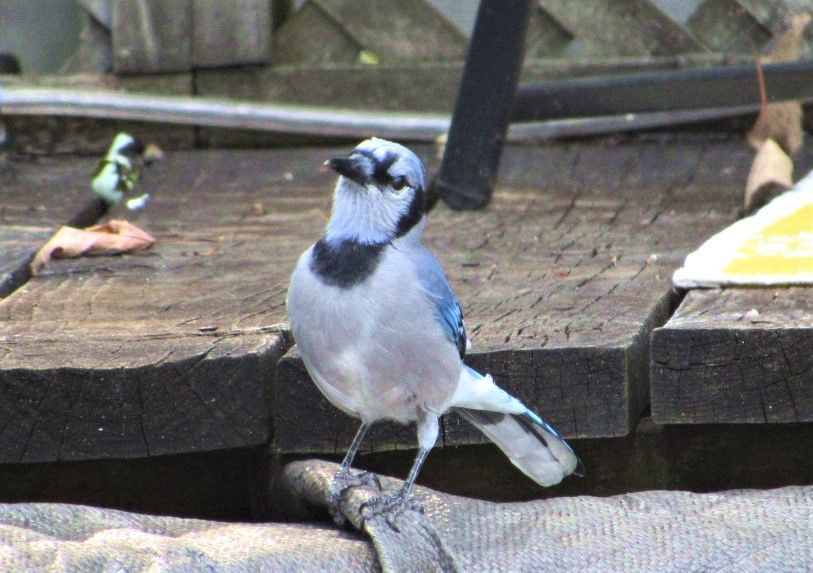
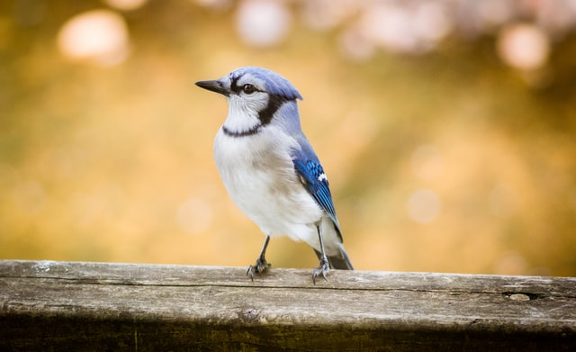

Blue Jay


- Description
- This common, large songbird is familiar to many people, with its perky crest; blue, white, and black plumage; and noisy calls. Blue Jays are known for their intelligence and complex social systems with tight family bonds. Their fondness for acorns is credited with helping spread oak trees after the last glacial period.
- Behavior
- Blue Jays make a large variety of calls that carry long distances. Most calls produced while the jay is perched within a tree. Usually flies across open areas silently, especially during migration. Stuffs food items in throat pouch to cache elsewhere; when eating, holds a seed or nut in feet and pecks it open.
- Habitat
- Blue Jays are found in all kinds of forests but especially near oak trees; they’re more abundant near forest edges than in deep forest. They’re common in urban and suburban areas, especially where oaks or bird feeders are found.
- Diet
- Blue Jays glean insects and take nuts and seeds in trees, shrubs, and on the ground; they also eat grains. They also take dead and injured small vertebrates. Blue Jays sometimes raid nests for eggs and nestlings, and sometimes pick up dead or dying adult birds. Blue Jays hold food items in feet while pecking them open. They store food in caches to eat later.
Blue Jay Call
Cool Facts
- The Blue Jay frequently mimics the calls of hawks, especially the Red-shouldered Hawk. These calls may provide information to other jays that a hawk is around, or may be used to deceive other species into believing a hawk is present.
- The pigment in Blue Jay feathers is melanin, which is brown. The blue color is caused by scattering light through modified cells on the surface of the feather barbs.
- The black bridle across the face, nape, and throat varies extensively and may help Blue Jays recognize one another.